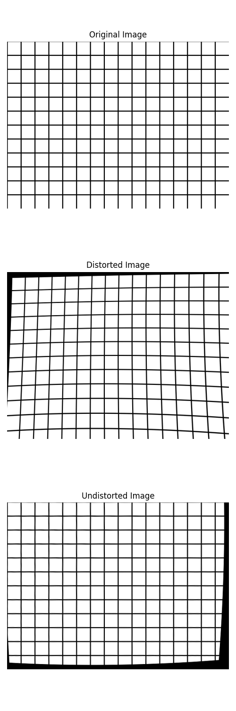
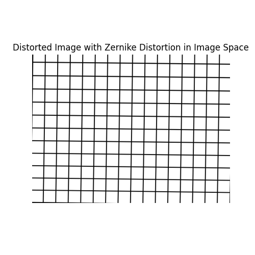
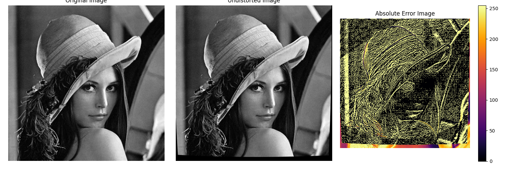

Note
Go to the end to download the full example code.
Distorting an image with distort_image and undistort_image#
This example illustrate how to use the distort_image function to apply a distortion to an image using a specified camera model, which includes the intrinsic and distortion transformations.
See also
pycvcam.distort_image()for the function to apply distortion to an image.pycvcam.undistort_image()for the function to remove distortion from an image.pycvcam.core.Intrinsicfor the intrinsic transformation.pycvcam.core.Distortionfor the distortion transformation.
Simple Worflow#
Once the Intrinsic and Distortion transformations are defined,
the distortion can be applied to an image using the distort_image
function. The function returns the distorted image.
For example, load an image and apply a Zernike distortion to it using the distort_image function.
The distortion parameters are loaded from a JSON file containing the Zernike coefficients.
Note
The return distorted image is numpy.float64 type, which may contain pixel values outside the valid range [0, 255].
It is recommended to clip the pixel values to [0, 255] and convert the image to numpy.uint8 type before saving or displaying it.
import numpy
import pycvcam
import matplotlib.pyplot as plt
import cv2
import os
# Create a grid image to visualize the distortion effect
image_height, image_width = 480, 640
src = numpy.full((image_height, image_width, 3), 255, dtype=numpy.uint8)
for i in range(0, image_height, 40):
cv2.line(src, (0, i), (image_width, i), (0, 0, 0), 2)
for j in range(0, image_width, 40):
cv2.line(src, (j, 0), (j, image_height), (0, 0, 0), 2)
# Create a simple intrinsic transformation
intrinsic = pycvcam.Cv2Intrinsic.from_matrix(
[[1000.0, 0.0, image_width / 2], [0.0, 1000.0, image_height / 2], [0.0, 0.0, 1.0]]
)
# Create a distortion transformation (Example Zernike distortion)
distortion = pycvcam.Cv2Distortion(
parameters=[0.2, 0.25, 0.07, 0.04, 0.008, 0.004, 0.001, 0.0005]
)
# Distort the image
distorted_image = pycvcam.distort_image(
src,
intrinsic=intrinsic,
distortion=distortion,
method="undistort",
interpolation="cubic",
)
distorted_image = numpy.clip(distorted_image, 0, 255).astype(
numpy.uint8
) # Ensure pixel values are valid
# Undistort the image back to the original using the same parameters
undistorted_image = pycvcam.undistort_image(
distorted_image,
intrinsic=intrinsic,
distortion=distortion,
interpolation="cubic",
)
# Display the distorted image
fig = plt.figure(figsize=(5, 15))
ax_src = fig.add_subplot(311)
ax_src.imshow(src)
ax_src.set_title("Original Image")
ax_src.axis("off")
ax_distorted = fig.add_subplot(312)
ax_distorted.imshow(distorted_image)
ax_distorted.set_title("Distorted Image")
ax_distorted.axis("off")
ax_undistorted = fig.add_subplot(313)
ax_undistorted.imshow(undistorted_image)
ax_undistorted.set_title("Undistorted Image")
ax_undistorted.axis("off")
plt.tight_layout()
plt.show()

Apply the distortion in the image space#
By default the distortion is applied in the normalized image space from the normalized_points to the distorted_points
and then the intrinsic transformation is applied to get the final image_points
But you can define the distortion in the image space and just set the intrinsic transformation to None, in this case the distortion will be applied directly to the image points without any intrinsic transformation.
For example, we create a zernike distortion but with parameters weights defines in pixels units instead of normalized units, and set the Zernike domain to the image space.
# Create a Zernike distortion with parameters defined in pixels units and domain in the image space
zernike_distortion = pycvcam.ZernikeDistortion(
parameters=[
0.8541972545746392,
-5.468596289790535,
-5.974287819021697,
14.292956075116104,
2.1403205479372627,
4.544169430137205,
-0.10099732464199339,
0.4363509204067417,
-0.5106374355681896,
-5.770087687650705,
-0.39147505788710696,
11.699411273002498,
] # In pixels units, example values for a small distortion
)
zernike_distortion.center = ((image_width - 1) / 2, (image_height - 1) / 2)
zernike_distortion.radius = numpy.sqrt(
((image_width - 1) / 2) ** 2 + ((image_height - 1) / 2) ** 2
)
# Distort the image using the Zernike distortion defined in the image space
distorted_image_pixels = pycvcam.distort_image(
src,
intrinsic=None, # No intrinsic transformation, distortion is applied in the image space
distortion=zernike_distortion,
method="undistort",
interpolation="cubic",
inverse_distortion_kwargs={"eps": 1e-1}, # tolerance for undistort -> 0.1 pixel
)
distorted_image_pixels = numpy.clip(distorted_image_pixels, 0, 255).astype(
numpy.uint8
) # Ensure pixel values are valid
# Display the distorted image
plt.figure(figsize=(5, 5))
plt.imshow(distorted_image_pixels)
plt.title("Distorted Image with Zernike Distortion in Image Space")
plt.axis("off")
plt.show()

Interpolation error#
The interpolation error can be studied by applying the distortion and then undistortion to an image and comparing the result with the original image.
The computation in done only ofr the inner part of the image to avoid the border effects of the distortion and undistortion.
image = pycvcam.get_lena_image()
height, width = image.shape[:2]
zernike_distortion.center = ((width - 1) / 2, (height - 1) / 2)
zernike_distortion.radius = numpy.sqrt(((width - 1) / 2) ** 2 + ((height - 1) / 2) ** 2)
distorted_image = pycvcam.distort_image(
image,
intrinsic=intrinsic,
distortion=distortion,
method="undistort",
interpolation="cubic",
inverse_distortion_kwargs={"eps": 1e-3}, # tolerance for undistort -> 0.001 pixel
)
undistorted_image = pycvcam.undistort_image(
distorted_image,
intrinsic=intrinsic,
distortion=distortion,
interpolation="cubic",
)
error_image = numpy.abs(undistorted_image - image)
rmse = numpy.sqrt(numpy.mean(error_image[20:-20, 20:-20] ** 2))
print(f"RMSE of undistortion: {rmse:.4f} GL")
plt.figure(figsize=(15, 5))
plt.subplot(1, 3, 1)
plt.title("Original Image")
plt.imshow(image, cmap="gray")
plt.axis("off")
plt.subplot(1, 3, 2)
plt.title("Undistorted Image")
plt.imshow(undistorted_image, cmap="gray")
plt.axis("off")
plt.subplot(1, 3, 3)
plt.title("Absolute Error Image")
plt.imshow(error_image, cmap="inferno", vmin=0, vmax=255)
plt.axis("off")
plt.colorbar()
plt.tight_layout()
plt.show()

RMSE of undistortion: 3.2035 GL
Total running time of the script: (0 minutes 3.824 seconds)